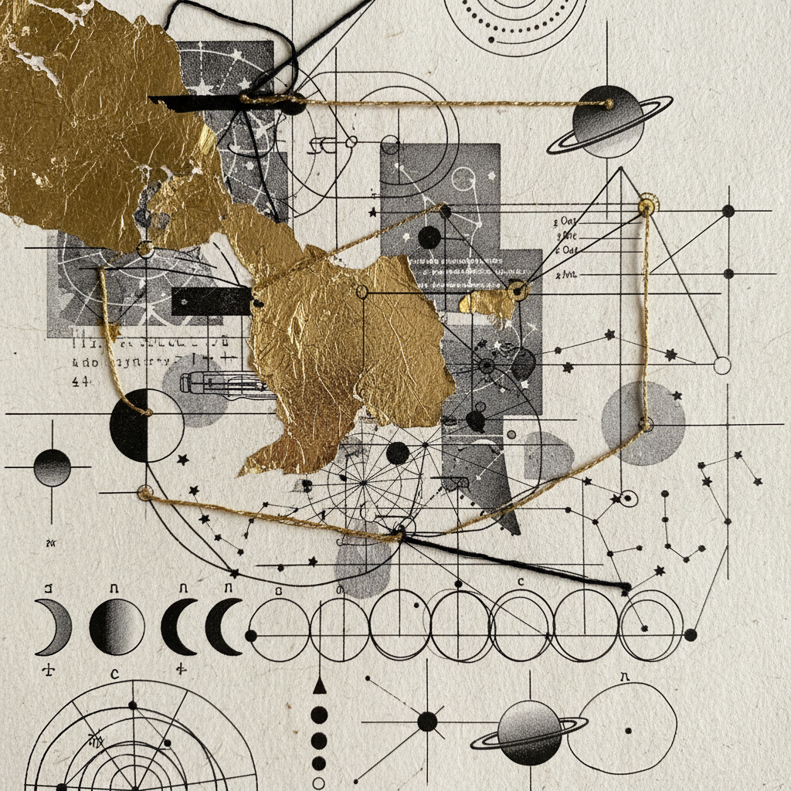
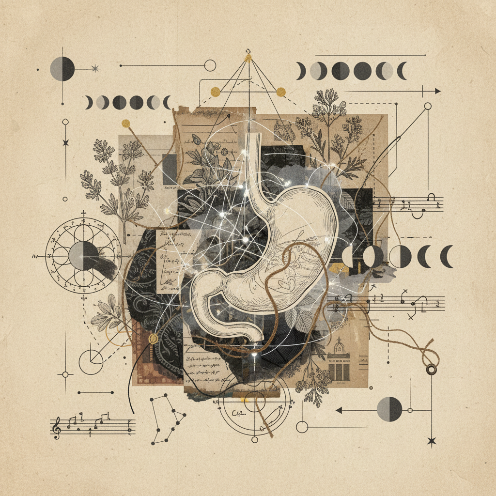

Virgo–Aries Eclipse Portal
Archetypal Journey
Releasing the paralysis of perfectionism for the vital spark of bold initiation.

14-Day Protocol Summary
Active Log: 014.22The Purge
Systemic release of micro-management habits. Clearing the digestive channel through selective fasting and solitude.
The Void
Engaging with the discomfort of 'unfinished' work. Embracing the entropy of the Virgoan shadow.
The Spark
Somatic transition from gut to head. Activating the Martian heat through breathwork and movement.
Initiation
The first radical act. Moving before preparation is complete. The birth of the Aries individual.
Somatic Research Prompts
Where does the desire for perfection create a 'knot' in the physical digestive system? Locate the physical sensation of hesitation.
Contrast the feeling of 'processing' (Virgo) with the feeling of 'impacting' (Aries). Which part of your skull holds the heat of a new idea?
Laboratory Observation
"The transition from the small intestine's discernment to the cranium's propulsion is not a journey of logic, but a transmutation of elemental weight. Earth becomes lightning."
Archival Metadata
Body Correspondence
Digestive System → Head/Initiative
Elemental Shift
Fixed Earth to Cardinal Fire
Portal Duration
14 Solar Cycles
Lead Researcher
Dr. Aris V. Thorne
